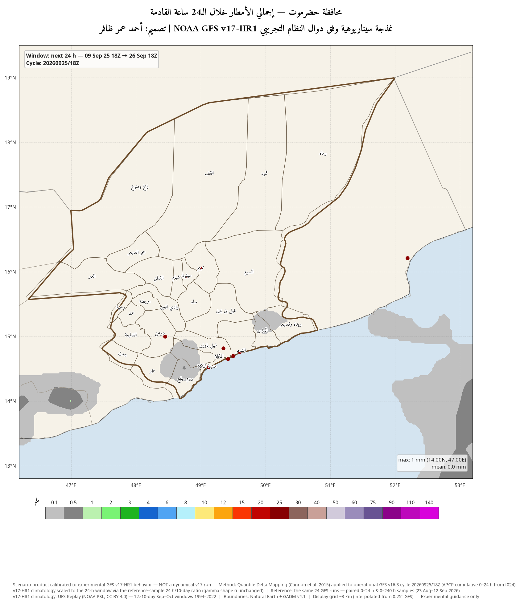
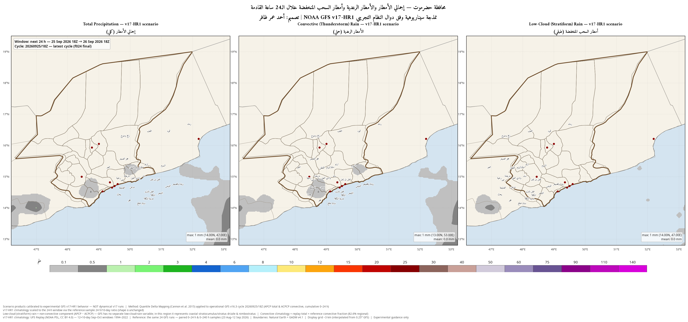
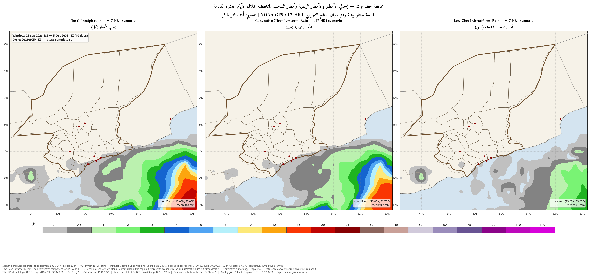
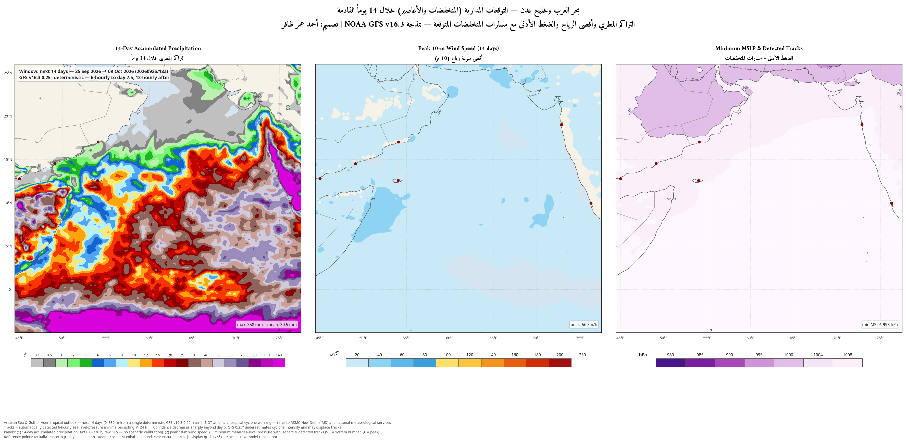
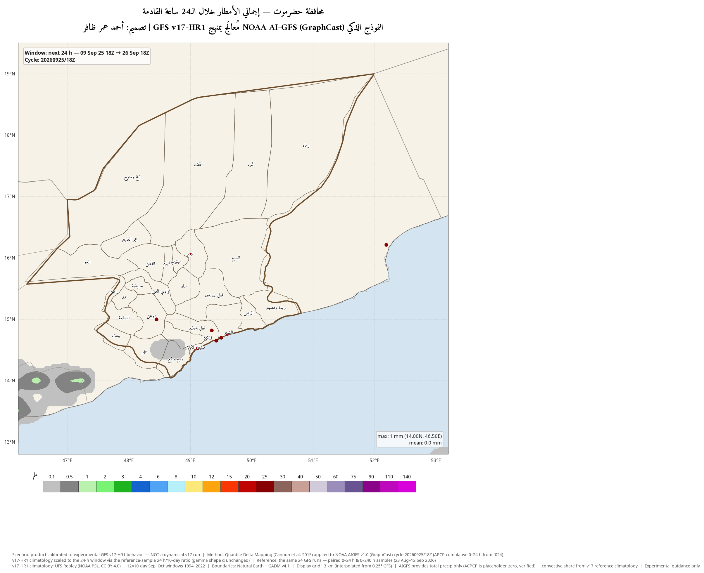
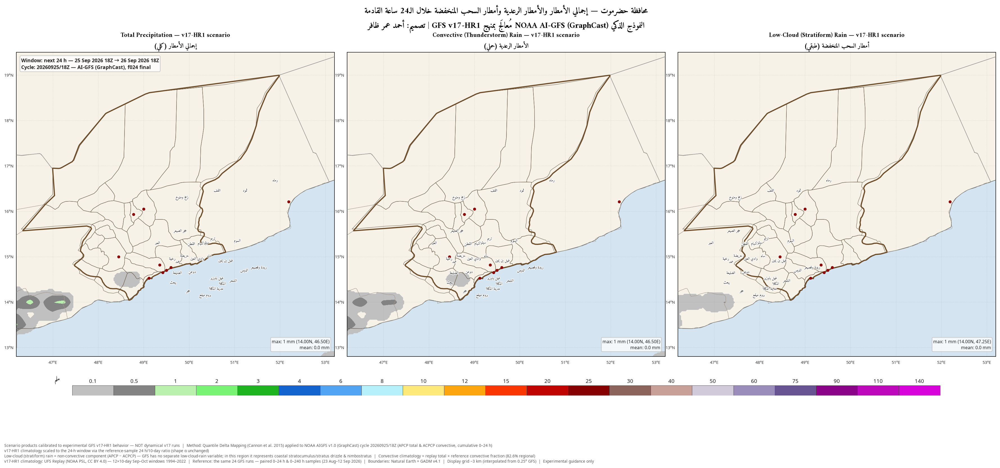
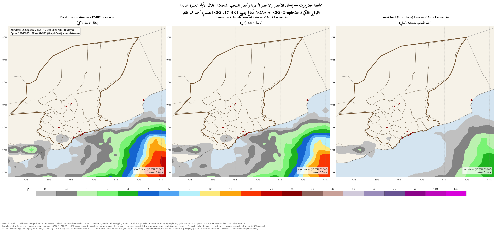
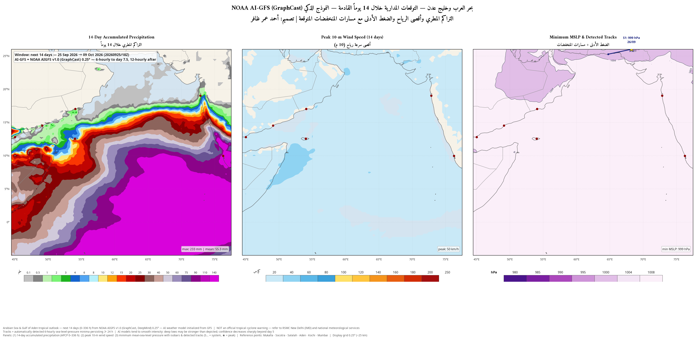

✕ اضغط للإغلاق

| المحطة | الطول | العرض | الإجمالي 24س (ملم) | الخام 24س (ملم) |
|---|---|---|---|---|
| Mukalla | 49.12 | 14.53 | 0.1 | 0.2 |
| Ash Shihr | 49.60 | 14.76 | 0.0 | 0.0 |
| Al-Dhabba Port | 49.50 | 14.70 | 0.0 | 0.0 |
| Shuhayr | 49.42 | 14.65 | 0.0 | 0.0 |
| Wadi Huwayrah | 49.35 | 14.82 | 0.0 | 0.0 |
| Seiyun (Wadi) | 48.78 | 15.93 | 0.0 | 0.0 |
| Tarim | 49.00 | 16.05 | 0.0 | 0.0 |
| Dawan (Wadi) | 48.45 | 15.00 | 0.0 | 0.0 |
| Al-Ghaydah | 52.19 | 16.21 | 0.0 | 0.1 |

| المحطة | الطول | العرض | الإجمالي (ملم) | الحملي (ملم) | الطبقي (ملم) | الحصة الحملية | خام كلي | خام حملي | خام طبقي |
|---|---|---|---|---|---|---|---|---|---|
| Mukalla | 49.12 | 14.53 | 0.1 | 0.1 | 0.0 | nan | 0.2 | 0.2 | 0.0 |
| Ash Shihr | 49.60 | 14.76 | 0.0 | 0.0 | 0.0 | nan | 0.0 | 0.0 | 0.0 |
| Al-Dhabba Port | 49.50 | 14.70 | 0.0 | 0.0 | 0.0 | nan | 0.0 | 0.0 | 0.0 |
| Shuhayr | 49.42 | 14.65 | 0.0 | 0.0 | 0.0 | nan | 0.0 | 0.0 | 0.0 |
| Wadi Huwayrah | 49.35 | 14.82 | 0.0 | 0.0 | 0.0 | nan | 0.0 | 0.0 | 0.0 |
| Seiyun (Wadi) | 48.78 | 15.93 | 0.0 | 0.0 | 0.0 | nan | 0.0 | 0.0 | 0.0 |
| Tarim | 49.00 | 16.05 | 0.0 | 0.0 | 0.0 | nan | 0.0 | 0.0 | 0.0 |
| Dawan (Wadi) | 48.45 | 15.00 | 0.0 | 0.0 | 0.0 | nan | 0.0 | 0.0 | 0.0 |
| Al-Ghaydah | 52.19 | 16.21 | 0.0 | 0.0 | 0.0 | nan | 0.1 | 0.1 | 0.0 |

| المحطة | الطول | العرض | الإجمالي (ملم) | الحملي (ملم) | الطبقي (ملم) | الحصة الحملية | خام كلي | خام حملي | خام طبقي |
|---|---|---|---|---|---|---|---|---|---|
| Mukalla | 49.12 | 14.53 | 0.2 | 0.1 | 0.0 | nan | 0.9 | 0.9 | 0.0 |
| Ash Shihr | 49.60 | 14.76 | 0.0 | 0.0 | 0.0 | nan | 0.9 | 0.9 | 0.1 |
| Al-Dhabba Port | 49.50 | 14.70 | 0.0 | 0.0 | 0.0 | nan | 0.9 | 0.9 | 0.1 |
| Shuhayr | 49.42 | 14.65 | 0.0 | 0.0 | 0.0 | nan | 0.9 | 0.9 | 0.1 |
| Wadi Huwayrah | 49.35 | 14.82 | 0.0 | 0.0 | 0.0 | nan | 0.7 | 0.6 | 0.1 |
| Seiyun (Wadi) | 48.78 | 15.93 | 0.0 | 0.0 | 0.0 | nan | 0.0 | 0.0 | 0.0 |
| Tarim | 49.00 | 16.05 | 0.0 | 0.0 | 0.0 | nan | 0.0 | 0.0 | 0.0 |
| Dawan (Wadi) | 48.45 | 15.00 | 0.0 | 0.0 | 0.0 | nan | 0.0 | 0.0 | 0.0 |
| Al-Ghaydah | 52.19 | 16.21 | 0.0 | 0.0 | 0.0 | nan | 0.4 | 0.4 | 0.1 |

| city | الطول | العرض | rain_14d_mm | peak_wind_kmh | min_mslp_hpa |
|---|---|---|---|---|---|
| المكلا | 49.12 | 14.53 | 0.9 | 20 | 1007 |
| حديبو (سقطرى) | 54.02 | 12.55 | 15.4 | 26 | 1009 |
| صلالة | 54.09 | 17.01 | 0.4 | 18 | 1007 |
| عدن | 45.02 | 12.79 | 0.1 | 31 | 1005 |
| كوتشي (الهند) | 76.27 | 9.97 | 67.4 | 15 | 1010 |
| مومباي | 72.86 | 19.02 | 8.7 | 26 | 1008 |

| المحطة | الطول | العرض | الإجمالي 24س (ملم) | الخام 24س (ملم) |
|---|---|---|---|---|
| Mukalla | 49.12 | 14.53 | 0.0 | 0.0 |
| Ash Shihr | 49.60 | 14.76 | 0.0 | 0.0 |
| Al-Dhabba Port | 49.50 | 14.70 | 0.0 | 0.0 |
| Shuhayr | 49.42 | 14.65 | 0.0 | 0.0 |
| Wadi Huwayrah | 49.35 | 14.82 | 0.0 | 0.0 |
| Seiyun (Wadi) | 48.78 | 15.93 | 0.0 | 0.0 |
| Tarim | 49.00 | 16.05 | 0.0 | 0.0 |
| Dawan (Wadi) | 48.45 | 15.00 | 0.0 | 0.0 |
| Al-Ghaydah | 52.19 | 16.21 | 0.0 | 0.0 |

| المحطة | الطول | العرض | الإجمالي (ملم) | الحملي (ملم) | الطبقي (ملم) | الحصة الحملية | خام كلي | خام حملي | خام طبقي |
|---|---|---|---|---|---|---|---|---|---|
| Mukalla | 49.12 | 14.53 | 0.0 | 0.0 | 0.0 | nan | 0.0 | 0.0 | 0.0 |
| Ash Shihr | 49.60 | 14.76 | 0.0 | 0.0 | 0.0 | nan | 0.0 | 0.0 | 0.0 |
| Al-Dhabba Port | 49.50 | 14.70 | 0.0 | 0.0 | 0.0 | nan | 0.0 | 0.0 | 0.0 |
| Shuhayr | 49.42 | 14.65 | 0.0 | 0.0 | 0.0 | nan | 0.0 | 0.0 | 0.0 |
| Wadi Huwayrah | 49.35 | 14.82 | 0.0 | 0.0 | 0.0 | nan | 0.0 | 0.0 | 0.0 |
| Seiyun (Wadi) | 48.78 | 15.93 | 0.0 | 0.0 | 0.0 | nan | 0.0 | 0.0 | 0.0 |
| Tarim | 49.00 | 16.05 | 0.0 | 0.0 | 0.0 | nan | 0.0 | 0.0 | 0.0 |
| Dawan (Wadi) | 48.45 | 15.00 | 0.0 | 0.0 | 0.0 | nan | 0.0 | 0.0 | 0.0 |
| Al-Ghaydah | 52.19 | 16.21 | 0.0 | 0.0 | 0.0 | nan | 0.0 | 0.0 | 0.0 |

| المحطة | الطول | العرض | الإجمالي (ملم) | الحملي (ملم) | الطبقي (ملم) | الحصة الحملية | خام كلي | خام حملي | خام طبقي |
|---|---|---|---|---|---|---|---|---|---|
| Mukalla | 49.12 | 14.53 | 0.0 | 0.0 | 0.0 | nan | 0.0 | 0.0 | 0.0 |
| Ash Shihr | 49.60 | 14.76 | 0.0 | 0.0 | 0.0 | nan | 0.0 | 0.0 | 0.0 |
| Al-Dhabba Port | 49.50 | 14.70 | 0.0 | 0.0 | 0.0 | nan | 0.0 | 0.0 | 0.0 |
| Shuhayr | 49.42 | 14.65 | 0.0 | 0.0 | 0.0 | nan | 0.0 | 0.0 | 0.0 |
| Wadi Huwayrah | 49.35 | 14.82 | 0.0 | 0.0 | 0.0 | nan | 0.0 | 0.0 | 0.0 |
| Seiyun (Wadi) | 48.78 | 15.93 | 0.0 | 0.0 | 0.0 | nan | 0.0 | 0.0 | 0.0 |
| Tarim | 49.00 | 16.05 | 0.0 | 0.0 | 0.0 | nan | 0.0 | 0.0 | 0.0 |
| Dawan (Wadi) | 48.45 | 15.00 | 0.0 | 0.0 | 0.0 | nan | 0.0 | 0.0 | 0.0 |
| Al-Ghaydah | 52.19 | 16.21 | 0.0 | 0.0 | 0.0 | nan | 0.0 | 0.0 | 0.0 |

| city | الطول | العرض | rain_14d_mm | peak_wind_kmh | min_mslp_hpa |
|---|---|---|---|---|---|
| المكلا | 49.12 | 14.53 | 0.2 | 15 | 1007 |
| حديبو (سقطرى) | 54.02 | 12.55 | 15.0 | 22 | 1009 |
| صلالة | 54.09 | 17.01 | 0.9 | 15 | 1008 |
| عدن | 45.02 | 12.79 | 1.0 | 23 | 1005 |
| كوتشي (الهند) | 76.27 | 9.97 | 112.4 | 13 | 1009 |
| مومباي | 72.86 | 19.02 | 1.1 | 23 | 1009 |